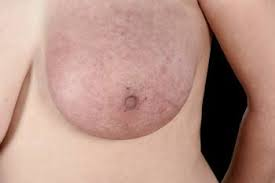
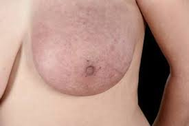
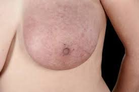

Breast cancer is the most common invasive cancer in women and
the second leading cause of cancer death in women after lung cancer.
Cancer occurs when changes called mutations take place in
genes that regulate cell growth. The mutations let the cells divide and multiply
in an uncontrolled way.
Breast cancer is cancer that develops in breast cells.
Typically, the cancer forms in either the lobules or the ducts of the breast.
Lobules are the glands that produce milk, and ducts are the pathways that bring
the milk from the glands to the nipple. Cancer can also occur in the fatty tissue or
the fibrous connective tissue within your breast.
Like all forms of cancer, breast cancer is made of unusual cells that grow out of control.
Those cells may also travel to
places in your body where they aren’t usually found. When that happens,
the cancer is called metastatic.
Different types of breast cancer grow and spread at different rates.
Some take years to spread beyond your breast, while others grow and spread quickly.

Symptoms.
The first symptoms of breast cancer usually appear as an area of
thickened tissue in the breast or a lump in the breast or an armpit.
Each type of breast cancer can cause a variety of symptoms.
Many of these symptoms are similar,
but some can be different. Symptoms for the most common breast cancers include:
a breast lump or tissue thickening that feels different than
surrounding tissue and has developed recently
breast pain
red, pitted skin over your entire breast
swelling in all or part of your breast
a nipple discharge other than breast milk
bloody discharge from your nipple
peeling, scaling, or flaking of skin on your nipple or breast
a sudden, unexplained change in the shape or size of your breast
inverted nipple
changes to the appearance of the skin on your breasts
Men can get breast cancer too, but they account for less than 1% of
all breast cancer cases. Among women, breast cancer is the most second most common cancer diagnosed,
after skin cancer, and the second leading cause of cancer deaths, after lung cancer.
On average, 1 in 8 women will develop breast cancer in their lifetimes.
About two-thirds of women with breast cancer are 55 or older. Most of
the rest are between 35 and 54.
Fortunately, breast cancer is very treatable if you spot it early.
Localized cancer (meaning it hasn’t spread outside your breast) can
usually be treated before it spreads.
Once the cancer begins to spread, treatment becomes more complicated.
It can often control the disease for years.
Diagnosis
To determine if your symptoms are caused by breast cancer or a benign breast condition, your doctor will do a thorough physical exam in addition to a breast exam. They may also request one or more diagnostic tests to help understand what’s causing your symptoms.
Tests that can help diagnose breast cancer include:
Mammogram. The most common way to see below the surface of your breast is with an
imaging test called a mammogram. Many women aged 40 and older get annual mammograms
to check for breast cancer. If your doctor suspects you may have a tumor or suspicious spot,
they will also request a mammogram.
If an abnormal area is seen on your mammogram, your doctor may request additional tests.
Ultrasound. A breast ultrasound uses sound waves to create a picture of the tissues deep in your breast. An ultrasound can help your doctor distinguish between a solid mass, such as a tumor, and a benign cyst.
MRI: Magnetic Resonance Imaging (MRI) combines different images of the breast to help a doctor identify cancer or other abnormalities. A doctor may recommend an MRI as a follow-up to a mammogram or ultrasound. Doctors sometimes use them as a screening tool for those at higher risk of breast cancer.
Risk factors
There are several risk factors that
increase your chances of getting breast cancer.
However, having any of these doesn’t mean you will definitely develop the disease.
Some risk factors can’t be avoided, such as family history.
You can change other risk factors, such as smoking. Risk factors for breast cancer include:
Age. Your risk for developing breast cancer increases as you age. Most invasive breast cancers are found in women over age 55.
Drinking alcohol. Drinking excessive amounts of alcohol raises your risk.
Having dense breast tissue. Dense breast tissue makes mammograms hard to read. It also increases your risk of breast cancer.
Gender. White women are 100 times more likely to develop breast cancer than white men, and black women are 70 times more likely to develop breast cancer than black men.
Genes. Women who have the BRCA1 and BRCA2 gene mutations are more likely to develop breast cancer than women who don’t. Other gene mutations may also affect your risk.
Early menstruation. If you had your first period before age 12, you have an increased risk for breast cancer.
Giving birth at an older age. Women who don’t have their first child until after age 35 have an increased risk of breast cancer.
Hormone therapy. Women who took or are taking postmenopausal estrogen and progesterone medications to reduce their signs of menopause symptoms have a higher risk of breast cancer.
Inherited risk. If a close female relative has had breast cancer, you have an increased risk for developing it. This includes your mother, grandmother, sister, or daughter. If you don’t have a family history of breast cancer, you can still develop breast cancer. In fact, the majority of women who develop it have no family history of the disease.
Late menopause start. Women who do not start menopause until after age 55 are more likely to develop breast cancer.
Never being pregnant. Women who never became pregnant or never carried a pregnancy to full term are more likely to develop breast cancer.
Breast cancer treatment
Your breast cancer’s stage, how far it has invaded (if it has), and how big the tumor has grown all play a large part in determining what kind of treatment you’ll need.
To start, your doctor will determine your cancer’s size, stage, and grade (how likely it is to grow and spread). After that, you can discuss your treatment options. Surgery is the most common treatment for breast cancer. Many women have additional treatments, such as chemotherapy, targeted therapy, radiation, or hormone therapy.
Surgery
Several types of surgery may be used to remove breast cancer, including:
Lumpectomy. This procedure removes the tumor and some surrounding tissue, leaving the rest of the breast intact.
Mastectomy. In this procedure, a surgeon removes an entire breast.In a double mastectomy, both breasts are removed.
Sentinel node biopsy. This surgery removes a few of the lymph nodes that receive drainage from the tumor. These lymph nodes will be tested. If they don’t have cancer, you may not need additional surgery to remove more lymph nodes.
Axillary lymph node dissection. If lymph nodes removed during a sentinel node biopsy contain cancer cells, your doctor may remove additional lymph nodes.
Contralateral prophylactic mastectomy. Even though breast cancer may be present in only one breast, some women elect to have a contralateral prophylactic mastectomy. This surgery removes your healthy breast to reduce your risk of developing breast cancer again.
Radiation therapy
With radiation therapy, high-powered beams of radiation are used to target and kill cancer cells. Most radiation treatments use external beam radiation. This technique uses a large machine on the outside of the body.
Advances in cancer treatment have also enabled doctors to irradiate cancer from inside the body. This type of radiation treatment is called brachytherapy. To conduct brachytherapy, surgeons place radioactive seeds, or pellets, inside the body near the tumor site. The seeds stay there for a short period of time and work to destroy cancer cells.
Chemotherapy
Chemotherapy is a drug treatment used to destroy cancer cells. Some people may undergo chemotherapy on its own, but this type of treatment is often used along with other treatments, especially surgery.
In some cases, doctors prefer to give patients chemotherapy before surgery. The hope is that the treatment will shrink the tumor, and then the surgery will not need to be as invasive. Chemotherapy has many unwanted side effects, so discuss your concerns with your doctor before starting treatment.
Hormone therapy
If your type of breast cancer is sensitive to hormones, your doctor may start you on hormone therapy. Estrogen and progesterone, two female hormones, can stimulate the growth of breast cancer tumors. Hormone therapy works by blocking your body’s production of these hormones, or by blocking the hormone receptors on the cancer cells. This action can help slow and possibly stop the growth of your cancer.
Medications
Certain treatments are designed to attack specific abnormalities or mutations within cancer cells. For example, Herceptin (trastuzumab) can block your body’s production of the HER2 protein. HER2 helps breast cancer cells grow, so taking a medication to slow the production of this protein may help slow cancer growth.
Breast cancer care
If you detect an unusual lump or spot in your breast, or have any other symptoms of breast cancer, make an appointment to see your doctor. Chances are good that it’s not breast cancer. For instance, there are many other potential causes for breast lumps.
But if your problem does turn out to be cancer, keep in mind that early treatment is the key. Early-stage breast cancer can often be treated and cured if found quickly enough. The longer breast cancer is allowed to grow, the more difficult treatment becomes.
If you’ve already received a breast cancer diagnosis, keep in mind that cancer treatments continue to improve, as do outcomes. So follow your treatment plan and try to stay positive. Find out more about the outlook for different stages of breast cancer.
 
